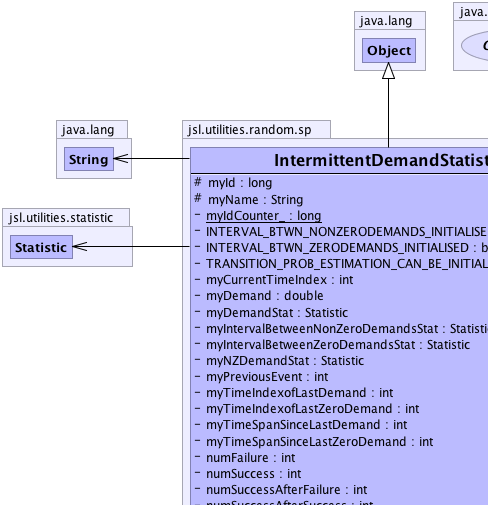
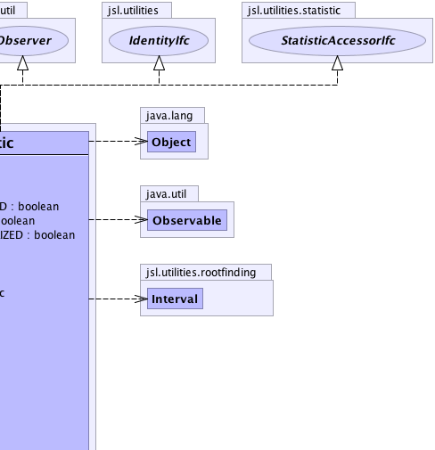
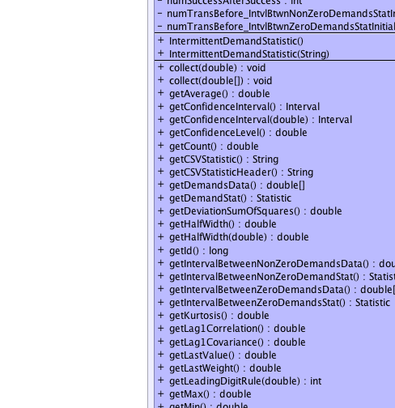
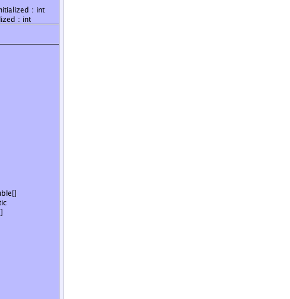
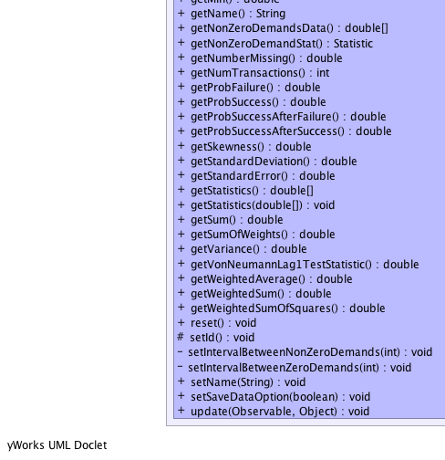
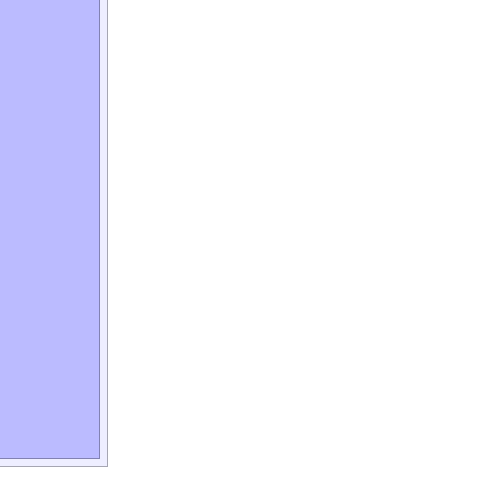

jsl.utilities.random.sp.IntermittentDemandStatistic
jsl.utilities.random.sp.IntermittentDemandStatistic
|
||||||||||
| PREV CLASS NEXT CLASS | FRAMES NO FRAMES | |||||||||
| SUMMARY: NESTED | FIELD | CONSTR | METHOD | DETAIL: FIELD | CONSTR | METHOD | |||||||||
java.lang.Object
public class IntermittentDemandStatistic
Implements the statistics estimator for an intermittent demand scenario
|  |  |
|  |  |
|  |  |
| Field Summary | |
|---|---|
private boolean |
INTERVAL_BTWN_NONZERODEMANDS_INITIALISED
|
private boolean |
INTERVAL_BTWN_ZERODEMANDS_INITIALISED
|
private int |
myCurrentTimeIndex
|
private double |
myDemand
|
private Statistic |
myDemandStat
|
protected long |
myId
|
private static long |
myIdCounter_
|
private Statistic |
myIntervalBetweenNonZeroDemandsStat
|
private Statistic |
myIntervalBetweenZeroDemandsStat
|
protected java.lang.String |
myName
|
private Statistic |
myNZDemandStat
|
private int |
myPreviousEvent
|
private int |
myTimeIndexofLastDemand
|
private int |
myTimeIndexofLastZeroDemand
|
private int |
myTimeSpanSinceLastDemand
|
private int |
myTimeSpanSinceLastZeroDemand
|
private int |
numFailure
|
private int |
numSuccess
|
private int |
numSuccessAfterFailure
|
private int |
numSuccessAfterSuccess
|
private int |
numTransBefore_IntvlBtwnNonZeroDemandsStatInitialized
|
private int |
numTransBefore_IntvlBtwnZeroDemandsStatInitialized
|
private boolean |
TRANSITION_PROB_ESTIMATION_CAN_BE_INITIALIZED
|
| Constructor Summary | |
|---|---|
IntermittentDemandStatistic()
|
|
IntermittentDemandStatistic(java.lang.String name)
|
|
| Method Summary | |
|---|---|
void |
collect(double data)
|
void |
collect(double[] data)
|
double |
getAverage()
Gets the unweighted average of the observations. |
Interval |
getConfidenceInterval()
A confidence interval for the mean based on the confidence level |
Interval |
getConfidenceInterval(double alpha)
A confidence interval for the mean based on the confidence level |
double |
getConfidenceLevel()
Gets the confidence level. |
double |
getCount()
Gets the count of the number of the observations. |
java.lang.String |
getCSVStatistic()
NOT IMPLEMENTED YET |
java.lang.String |
getCSVStatisticHeader()
NOT IMPLEMENTED YET |
double[] |
getDemandsData()
|
Statistic |
getDemandStat()
|
double |
getDeviationSumOfSquares()
Gets the sum of squares of the deviations from the average This is the numerator in the classic sample variance formula |
double |
getHalfWidth()
Gets the confidence interval half-width. |
double |
getHalfWidth(double alpha)
Gets the confidence interval half-width. |
long |
getId()
|
double[] |
getIntervalBetweenNonZeroDemandsData()
|
Statistic |
getIntervalBetweenNonZeroDemandStat()
|
double[] |
getIntervalBetweenZeroDemandsData()
|
Statistic |
getIntervalBetweenZeroDemandsStat()
|
double |
getKurtosis()
Gets the kurtosis of the data |
double |
getLag1Correlation()
Gets the lag-1 sample correlation of the unweighted observations. |
double |
getLag1Covariance()
Gets the lag-1 sample covariance of the unweighted observations. |
double |
getLastValue()
Gets the last observed data point |
double |
getLastWeight()
Gets the last observed weight |
int |
getLeadingDigitRule(double a)
Computes the right most meaningful digit according to (int)Math.floor(Math.log10(a*getStandardError())) See doi 10.1287.opre.1080.0529 by Song and Schmeiser |
double |
getMax()
Gets the maximum of the observations. |
double |
getMin()
Gets the minimum of the observations. |
java.lang.String |
getName()
Gets the name of the Statistic |
double[] |
getNonZeroDemandsData()
|
Statistic |
getNonZeroDemandStat()
|
double |
getNumberMissing()
When a data point having the value of Double.NaN is presented it is excluded from the summary statistics and the number of missing points is noted. |
int |
getNumTransactions()
|
double |
getProbFailure()
|
double |
getProbSuccess()
|
double |
getProbSuccessAfterFailure()
|
double |
getProbSuccessAfterSuccess()
|
double |
getSkewness()
Gets the skewness of the data |
double |
getStandardDeviation()
Gets the unweighted sample standard deviation of the observations. |
double |
getStandardError()
Gets the standard error of the observations. |
double[] |
getStatistics()
Fills up an array with the statistics defined by this interface statistics[0] = getCount(); statistics[1] = getAverage(); statistics[2] = getStandardDeviation(); statistics[3] = getStandardError(); statistics[4] = getHalfWidth(); statistics[5] = getConfidenceLevel(); statistics[6] = getMin(); statistics[7] = getMax(); statistics[8] = getSum(); statistics[9] = getVariance(); statistics[10] = getWeightedAverage(); statistics[11] = getWeightedSum(); statistics[12] = getSumOfWeights(); statistics[13] = getWeightedSumOfSquares(); statistics[14] = getDeviationSumOfSquares(); statistics[15] = getLastValue(); statistics[16] = getLastWeight(); statistics[17] = getKurtosis(); statistics[18] = getSkewness(); statistics[19] = getLag1Covariance(); statistics[20] = getLag1Correlation(); statistics[21] = getVonNeumannLag1TestStatistic(); statistics[22] = getNumberMissing(); |
void |
getStatistics(double[] statistics)
Fills up the supplied array with the statistics defined by this interface index = statistic statistics[0] = getCount(); statistics[1] = getAverage(); statistics[2] = getStandardDeviation(); statistics[3] = getStandardError(); statistics[4] = getHalfWidth(); statistics[5] = getConfidenceLevel(); statistics[6] = getMin(); statistics[7] = getMax(); statistics[8] = getSum(); statistics[9] = getVariance(); statistics[10] = getWeightedAverage(); statistics[11] = getWeightedSum(); statistics[12] = getSumOfWeights(); statistics[13] = getWeightedSumOfSquares(); statistics[14] = getDeviationSumOfSquares(); statistics[15] = getLastValue(); statistics[16] = getLastWeight(); statistics[17] = getKurtosis(); statistics[18] = getSkewness(); statistics[19] = getLag1Covariance(); statistics[20] = getLag1Correlation(); statistics[21] = getVonNeumannLag1TestStatistic(); statistics[22] = getNumberMissing(); The array must be of size 23 or an exception will be thrown |
double |
getSum()
Gets the unweighted sum of the observations. |
double |
getSumOfWeights()
Gets the sum of the observed weights. |
double |
getVariance()
Gets the unweighted sample variance of the observations. |
double |
getVonNeumannLag1TestStatistic()
Gets the Von Neumann Lag 1 test statistic for checking the hypothesis that the data are uncorrelated Note: See Handbook of Simulation, Jerry Banks editor, McGraw-Hill, pg 253. |
double |
getWeightedAverage()
Gets the weighted average of the observations. |
double |
getWeightedSum()
Gets the weighted sum of observations observed. |
double |
getWeightedSumOfSquares()
Gets the weighted sum of squares of the observations. |
void |
reset()
|
protected void |
setId()
|
private void |
setIntervalBetweenNonZeroDemands(int myCurrentTimeIndex)
|
private void |
setIntervalBetweenZeroDemands(int myCurrentTimeIndex)
|
void |
setName(java.lang.String str)
|
void |
setSaveDataOption(boolean flag)
|
void |
update(java.util.Observable o,
java.lang.Object arg)
|
| Methods inherited from class java.lang.Object |
|---|
clone, equals, finalize, getClass, hashCode, notify, notifyAll, toString, wait, wait, wait |
| Methods inherited from interface jsl.utilities.statistic.StatisticAccessorIfc |
|---|
toString |
| Field Detail |
|---|
protected long myId
protected java.lang.String myName
private static long myIdCounter_
private double myDemand
private Statistic myNZDemandStat
private Statistic myDemandStat
private Statistic myIntervalBetweenNonZeroDemandsStat
private Statistic myIntervalBetweenZeroDemandsStat
private boolean TRANSITION_PROB_ESTIMATION_CAN_BE_INITIALIZED
private int myPreviousEvent
private int numSuccess
private int numFailure
private int numSuccessAfterSuccess
private int numSuccessAfterFailure
private int myTimeSpanSinceLastDemand
private int myTimeSpanSinceLastZeroDemand
private int myTimeIndexofLastDemand
private int myTimeIndexofLastZeroDemand
private boolean INTERVAL_BTWN_NONZERODEMANDS_INITIALISED
private boolean INTERVAL_BTWN_ZERODEMANDS_INITIALISED
private int numTransBefore_IntvlBtwnNonZeroDemandsStatInitialized
private int numTransBefore_IntvlBtwnZeroDemandsStatInitialized
private int myCurrentTimeIndex
| Constructor Detail |
|---|
public IntermittentDemandStatistic()
public IntermittentDemandStatistic(java.lang.String name)
| Method Detail |
|---|
public void reset()
public void setSaveDataOption(boolean flag)
protected void setId()
public final void setName(java.lang.String str)
public java.lang.String getName()
StatisticAccessorIfc
getName in interface IdentityIfcgetName in interface StatisticAccessorIfcpublic long getId()
getId in interface IdentityIfc
public void update(java.util.Observable o,
java.lang.Object arg)
update in interface java.util.Observero - arg - public void collect(double[] data)
public void collect(double data)
public double[] getNonZeroDemandsData()
public double[] getDemandsData()
public double[] getIntervalBetweenNonZeroDemandsData()
public double[] getIntervalBetweenZeroDemandsData()
public int getNumTransactions()
private void setIntervalBetweenNonZeroDemands(int myCurrentTimeIndex)
private void setIntervalBetweenZeroDemands(int myCurrentTimeIndex)
public Statistic getIntervalBetweenNonZeroDemandStat()
public Statistic getIntervalBetweenZeroDemandsStat()
public Statistic getNonZeroDemandStat()
public Statistic getDemandStat()
public double getProbSuccessAfterSuccess()
public double getProbSuccessAfterFailure()
public double getProbSuccess()
public double getProbFailure()
public double getAverage()
StatisticAccessorIfc
getAverage in interface StatisticAccessorIfcpublic double getConfidenceLevel()
StatisticAccessorIfc
getConfidenceLevel in interface StatisticAccessorIfcpublic double getCount()
StatisticAccessorIfc
getCount in interface StatisticAccessorIfcpublic double getDeviationSumOfSquares()
StatisticAccessorIfc
getDeviationSumOfSquares in interface StatisticAccessorIfcpublic double getHalfWidth(double alpha)
StatisticAccessorIfc
getHalfWidth in interface StatisticAccessorIfcpublic double getHalfWidth()
StatisticAccessorIfc
getHalfWidth in interface StatisticAccessorIfcpublic Interval getConfidenceInterval(double alpha)
StatisticAccessorIfc
getConfidenceInterval in interface StatisticAccessorIfcpublic Interval getConfidenceInterval()
StatisticAccessorIfc
getConfidenceInterval in interface StatisticAccessorIfcpublic double getKurtosis()
StatisticAccessorIfc
getKurtosis in interface StatisticAccessorIfcpublic double getLag1Correlation()
StatisticAccessorIfc
getLag1Correlation in interface StatisticAccessorIfcpublic double getLag1Covariance()
StatisticAccessorIfc
getLag1Covariance in interface StatisticAccessorIfcpublic double getLastValue()
StatisticAccessorIfc
getLastValue in interface StatisticAccessorIfcpublic double getLastWeight()
StatisticAccessorIfc
getLastWeight in interface StatisticAccessorIfcpublic double getMax()
StatisticAccessorIfc
getMax in interface StatisticAccessorIfcpublic double getMin()
StatisticAccessorIfc
getMin in interface StatisticAccessorIfcpublic double getNumberMissing()
StatisticAccessorIfc
getNumberMissing in interface StatisticAccessorIfcpublic double getSkewness()
StatisticAccessorIfc
getSkewness in interface StatisticAccessorIfcpublic double getStandardDeviation()
StatisticAccessorIfc
getStandardDeviation in interface StatisticAccessorIfcpublic double getStandardError()
StatisticAccessorIfc
getStandardError in interface StatisticAccessorIfcpublic final int getLeadingDigitRule(double a)
StatisticAccessorIfc
getLeadingDigitRule in interface StatisticAccessorIfcpublic void getStatistics(double[] statistics)
StatisticAccessorIfc
getStatistics in interface StatisticAccessorIfcpublic double[] getStatistics()
StatisticAccessorIfc
getStatistics in interface StatisticAccessorIfcpublic double getSum()
StatisticAccessorIfc
getSum in interface StatisticAccessorIfcpublic double getSumOfWeights()
StatisticAccessorIfc
getSumOfWeights in interface StatisticAccessorIfcpublic double getVariance()
StatisticAccessorIfc
getVariance in interface StatisticAccessorIfcpublic double getVonNeumannLag1TestStatistic()
StatisticAccessorIfc
getVonNeumannLag1TestStatistic in interface StatisticAccessorIfcpublic double getWeightedAverage()
StatisticAccessorIfc
getWeightedAverage in interface StatisticAccessorIfcpublic double getWeightedSum()
StatisticAccessorIfc
getWeightedSum in interface StatisticAccessorIfcpublic double getWeightedSumOfSquares()
StatisticAccessorIfc
getWeightedSumOfSquares in interface StatisticAccessorIfcpublic java.lang.String getCSVStatistic()
getCSVStatistic in interface GetCSVStatisticIfcpublic java.lang.String getCSVStatisticHeader()
getCSVStatisticHeader in interface GetCSVStatisticIfc
|
||||||||||
| PREV CLASS NEXT CLASS | FRAMES NO FRAMES | |||||||||
| SUMMARY: NESTED | FIELD | CONSTR | METHOD | DETAIL: FIELD | CONSTR | METHOD | |||||||||